PyCharm及vscode快速配置RQSDK上手 说明文档¶
PyCharm及 VS Code 快速配置RQSDK上手¶
PyCharm¶
为什么要用PyCharm？¶
- PyCharm 作为 IDE（集成开发环境），再带 python 解释器和虚拟环境管理功能，开箱即用
- PyCharm 默认的内置功能极为丰富（Git、数据库支持、框架支持等），无需手动配置插件便可直接使用
- PyCharm 内置了在业界无出其右的静态代码审查（code inspect）功能
PyCharm 下载¶
官网提供了专业版和社区版下载。
-
专业版用于科学计算和 Web 开发。同时具有 HTML、JS 和 SQL 等支持。专业版 PyCharm 支持试用30天。
-
社区版用于通常的 Python 开发。免费且开源。
创建 PyCharm 工程（Project）¶
下载且安装完成 PyCharm 后，便可打开 Pycharm 后建立一个工程。该阶段可以设置项目使用的 Python 解释器/虚拟环境，后续开发中的代码提示、调试等功能都依赖为工程配置的虚拟环境：
- 点击 Create New Project 按钮
- 展开 Project interpreter
- 选择虚拟环境（若没有已存在环境，则 PyCharm 会自动创建）
- 点击 Create 按钮
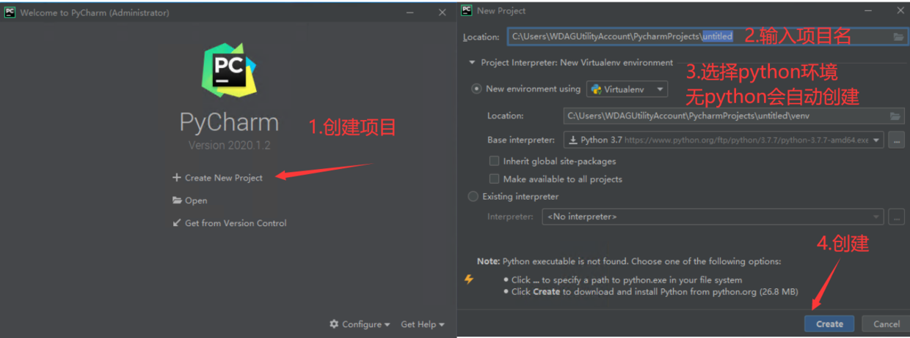
如果没有python环境 ，编辑器右下角会有进度条提示python的安装进度。
工程创建完成后，亦可在设置中修改当前工程使用的虚拟环境：
- 点击左上角菜单栏FIle -> Settings（macOS 中为 PyCharm -> Preference）
- 点击 Project: **** -> Project Interpreter
- 点击右边小齿轮 -> Show All
- 点击加号（+） -> 选择虚拟环境（Virtualenv Environment) 或者 Conda 环境（Conda Environment) `
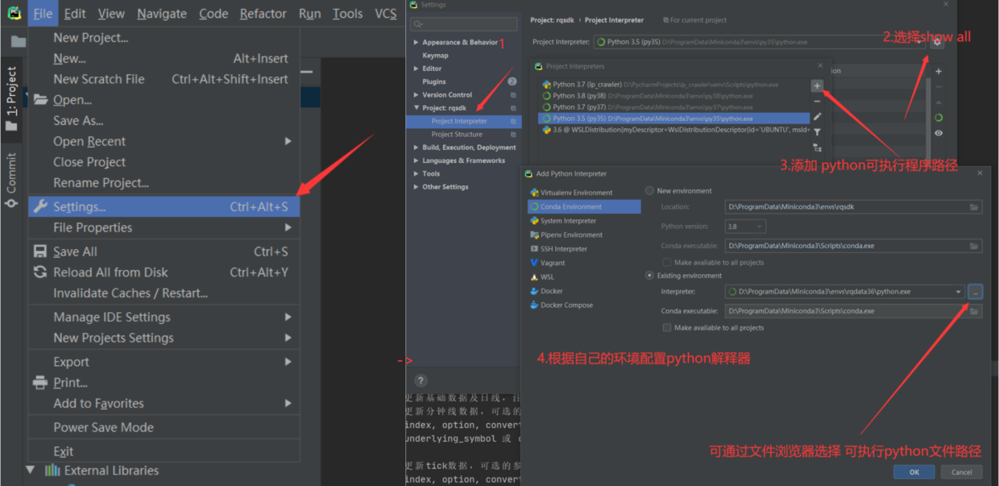
在 PyCharm 中安装 RQSDK¶
若当前工程配置的虚拟环境中还未安装 RQSDK，可以直接在 PyCharm 中调用终端（terminal）安装，PyCharm 会自动在改终端激活先前配置好的虚拟环境。
若点击左下角 Terminal 以激活终端，输入以下代码以安装 RQSDK
pip install -i https://pypi.douban.com/simple rqsdk
使用 PyCharm 编写代码¶
-
创建 Python 模块（module）
鼠标右键项目文件夹 -> New -> Python File -> 输入文件名
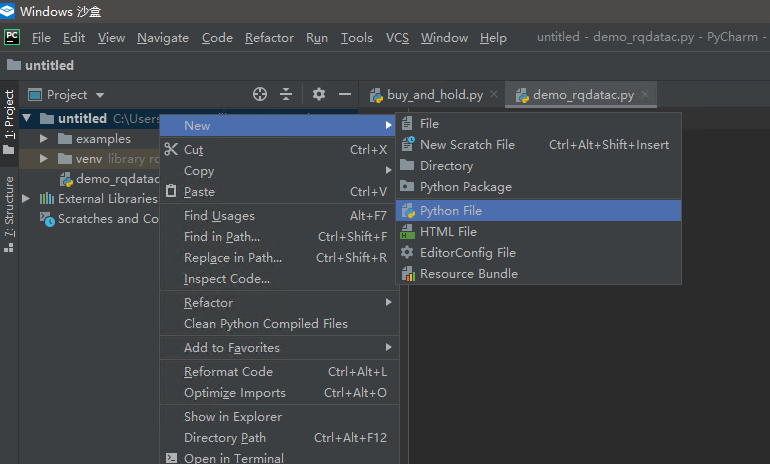 -
若当前工程正确配置了虚拟环境，且虚拟环境中安装了 RQSDK，在 py 文件中输入“rq”时便可以看到 PyCharm 给出的代码提示
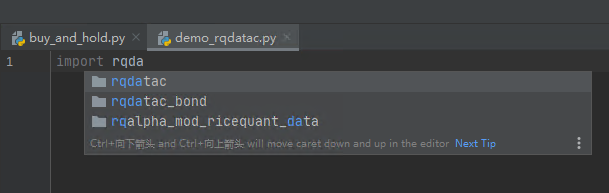 -
在 py 文件中输入代码，如使用 RQDatac 调取日线数据：
import rqdatac
rqdatac.init()
print(rqdatac.get_price("000001.XSHE"))
- 在编辑区域点击右键执行 Run… 便可以运行当前模块，注意，上述代码的运行要求事先使用
rqsdk license命令配置好 license。
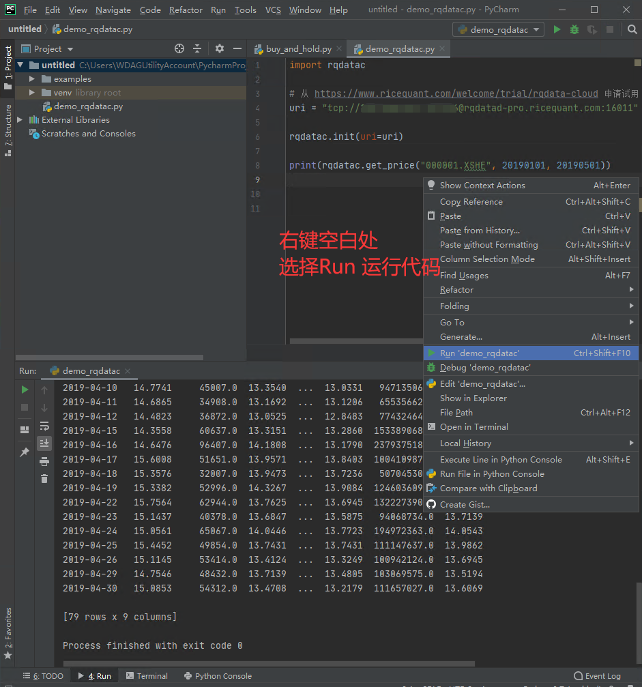
- 当用了
rqsdk install rqalpha_plus后，当前python环境也会有 rqoptimizer 和 rqfactor
使用 PyCharm 运行回测¶
回测在终端中需要通过 rqalpha-plus 命令而非 python 命令运行，故在 PyCharm 中运行回测需要进行一些额外的配置，以简单的 buy-and-hold 回测策略为例。
-
创建名为 buy_and_hold 的 python 模块并键入以下代码：
```python
buy_and_hold.py¶
def init(context):
context.s = “000001.XSHE”
context.fired = Falsedef handle_bar(context, bar_dict):
if not context.fired:
order_shares(context.s, 1000)
context.fired = True
``` -
点击右上角的
Add Configuration
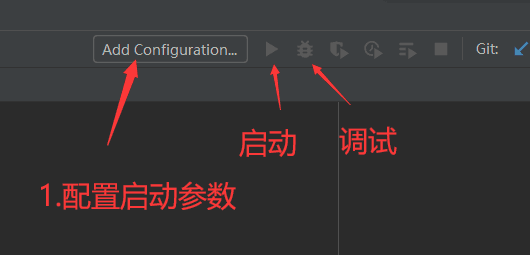
- 在打开的窗口中将第一项左侧默认的运行方式由
Script path修改为Module name -
设置
Module name为rqalpha_plus，设置Parameters为回测运行的子命令run及其参数，如：shell run -f buy_and_hold.py -s 20190101 -e 20191231 -a stock 20000 --plot
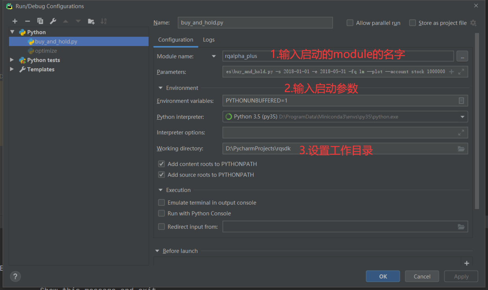
- 点击 OK 按钮以完成配置
- 点击右上角的三角形按钮以运行回测，或点击虫子按钮以调试（debug）代码
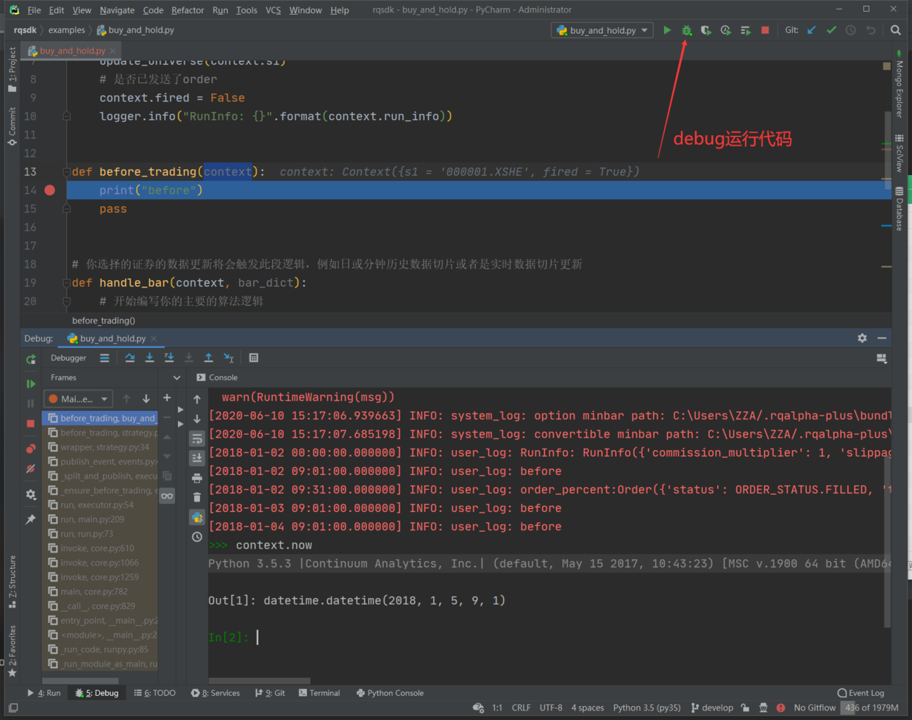
Visual Studio Code (VS Code)¶
为什么要用 VS Code？¶
- 轻量化，下载安装更快；资源占用低，对配置相对不足的计算机更友好
- 启动快速，首次创建工程时没有漫长等待创建索引的过程
- 生态健全，有着丰富的第三方主题和插件
在Visual Studio Code官网可以下载标准版。
安装 Python 插件（Extensions）¶
VScode 不是 python 专用的编辑器，故使用其开发 python 需要安装专门的插件支持才能获得代码提示、审查、调试等功能：
- 在左侧栏点击 Extensions 后，搜索 python，选择搜索到的第一项并点击
install按钮安装。
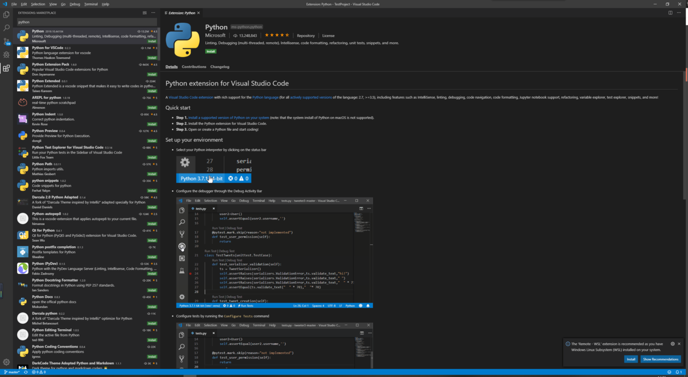
设置虚拟环境/Python 解释器¶
- 使用 Ctrl+Shift+P 快捷键（macOS 为 Command+Shift+P）打开 command palette 窗口
- 输入关键字
python select并找到Python: Select Interpreter一项， 点击该项并在随后弹出的 Python 解释器列表中选择目标虚拟环境中的解释器（若目标虚拟环境未列出，则需要手工输入解释器的路径）
使用 VS Code 编写代码¶
- 新建一个文件夹
- 将文件夹拖入到VS code 窗口
- 创建py文件
open folder -> new file 文件名:demo_rqdatac.py
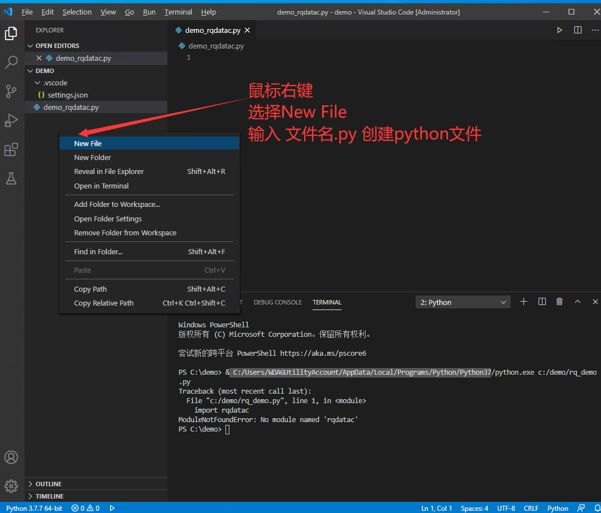
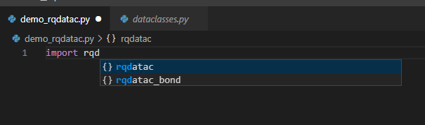
- 使用rqdatac 查看平安银行日线数据
文件中输入以下代码：
import rqdatac
rqdatac.init()
print(rqdatac.get_price("000001.XSHE"))
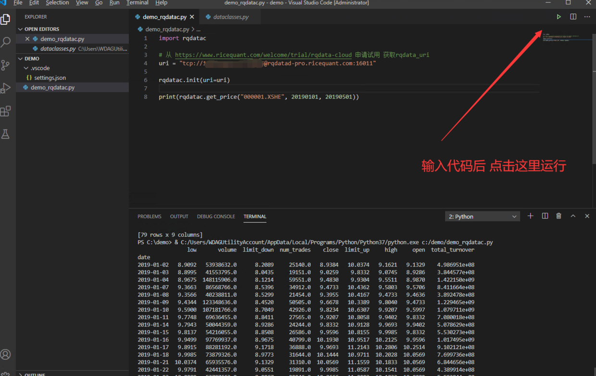
- 运行rqalpha-plus
生成样例策略并运行
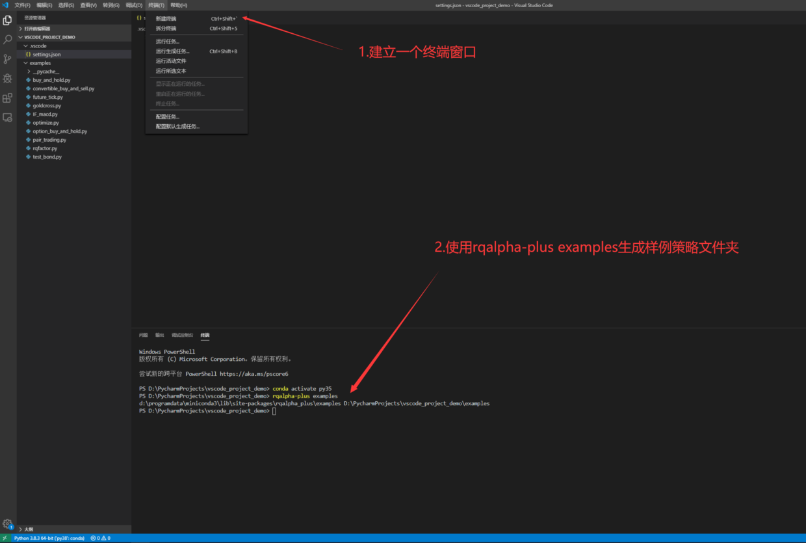
运行样例策略需要的命令如下 (假设conda环境名为py35)
conda activate py35
pip install rqsdk -i https://pypi.douban.com/simple/
rqsdk install rqalpha-plus
rqsdk download-data
rqalpha-plus examples
rqalpha-plus run -f examples/buy_and_hold.py -s 2018-01-01 -e 2018-05-31 -fq 1m --plot --account stock 1000000
命令对应作用如下：
- 激活名为 py35 的 conda环境，如果没有则输入conda create -n py35
- 安装 rqsdk和rqalpha-plus
- 生成样例策略文件夹
- 使用 examples 的 buy_and_hold.py 策略启动回测
用debug方式运行回测¶
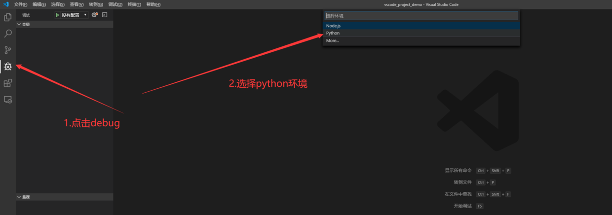
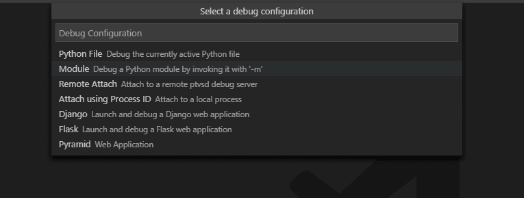
launch.json配置如下
{
// 使用 IntelliSense 了解相关属性。
// 悬停以查看现有属性的描述。
// 欲了解更多信息，请访问: https://go.microsoft.com/fwlink/?linkid=830387
"version": "0.2.0",
"configurations": [
{
"name": "Python: 模块",
"type": "python",
"request": "launch",
"module": "rqalpha-plus",
"args": ["run", "-f", "examples\\buy_and_hold.py", "-s", "2018-01-01", "-e", "2018-05-31", "-fq", "1m", "--plot", "--account", "stock", "1000000"]
}
]
}
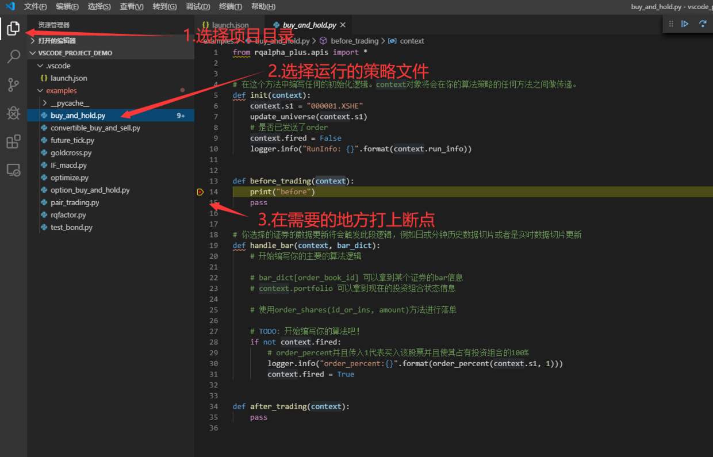
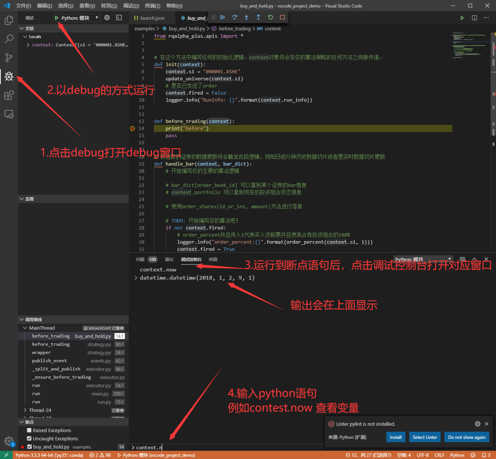
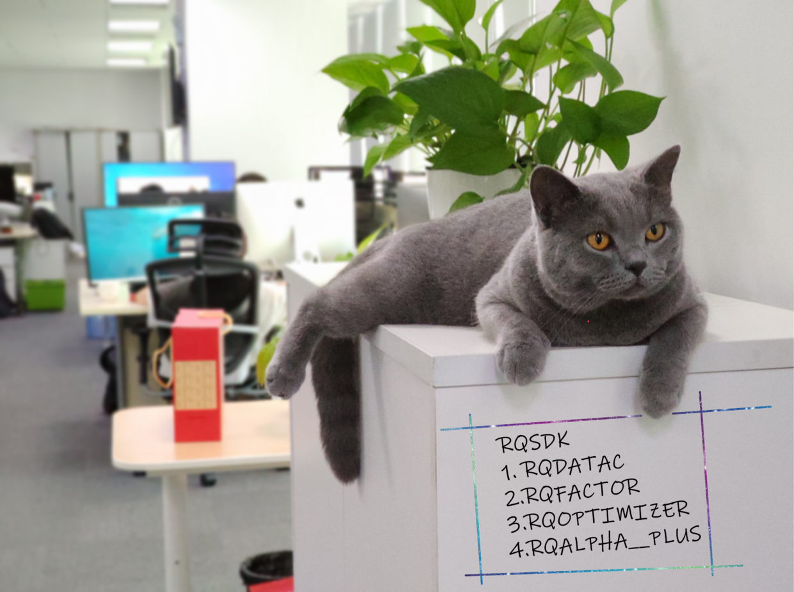